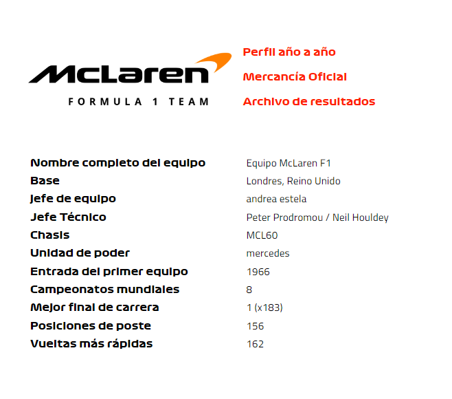
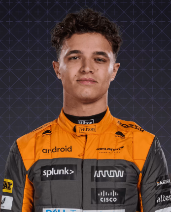
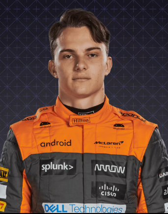

McLaren

En perfil
Desde que ingresó al deporte en 1966 bajo la guía y el esfuerzo incansable del fundador del mismo nombre, Bruce, el éxito de McLaren ha sido impresionante. Cinco décadas brillantes han producido innumerables victorias, poles y podios, sin mencionar ocho campeonatos de constructores. Además, algunos de los mejores pilotos del deporte se hicieron famosos con el equipo, incluidos Emerson Fittipaldi, Ayrton Senna, Mika Hakkinen y Lewis Hamilton...
2022
Cae a P5 en la clasificación detrás de Alpine, con Lando Norris anotando su único podio en Imola, y 122 de sus 159 puntos. Daniel Ricciardo no logra familiarizarse con el MCL36 con motor Mercedes y deja el equipo al final de la temporada.
2021
Registre su primera victoria desde 2012, con Daniel Ricciardo y Lando Norris obteniendo el único doblete del año de cualquier equipo en Monza. Sin embargo, cae al cuarto lugar en la general después de salir peor en el duelo de una temporada por P3 con Ferrari.
2020
Rápidos y consistentes, vencieron a sus rivales de la mitad superior del campo a P3 en la clasificación mientras Ferrari fallaba, con Carlos Sainz y Lando Norris logrando podios. Acuerdan acuerdo para usar la energía de Mercedes a partir de 2021
2019
Con la asociación de Renault comenzando a solidificarse, y la estrella novata Lando Norris presionando con fuerza al experimentado Carlos Sainz, se restablecen claramente como "los mejores del resto" detrás de los tres grandes equipos. El tercer lugar en Brasil marca su primer podio en cinco años.
Pilotos

Lando Norris

Óscar Piastri